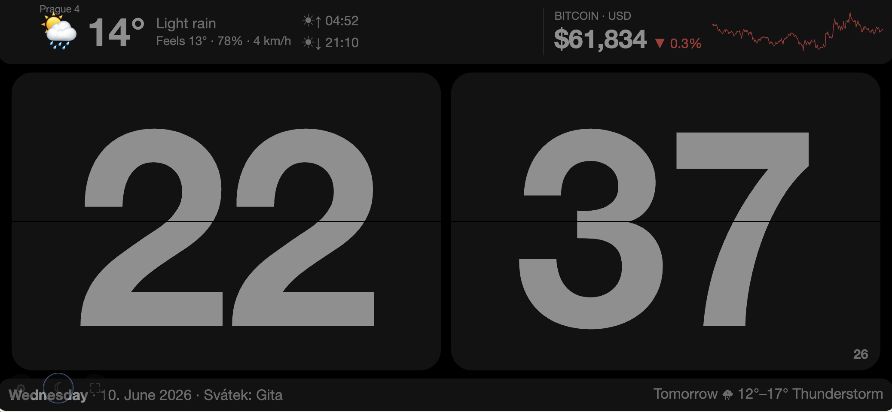
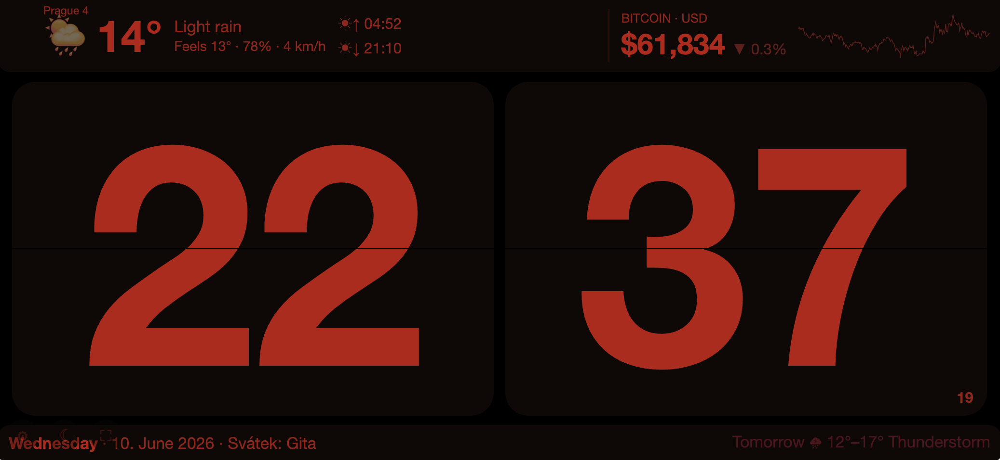
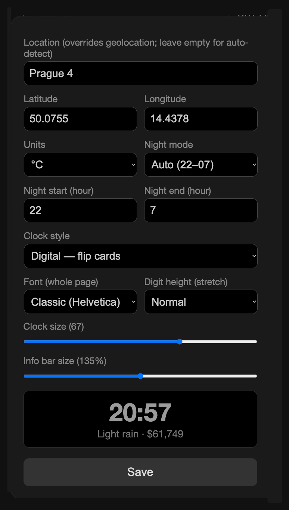

Turn your old iPad into a beautiful bedside clock.
One HTML file. No app, no account, no ads. Free forever.

Day mode — 70's flip clock, local weather, sunrise & sunset, Bitcoin with 24h graph

Night mode — everything turns dim red automatically at bedtime. Easy on sleepy eyes.

Settings — location, units, clock styles, fonts, sliders with live preview
Flip cards, LED 7-segment, 70's square analog, minimal round, Swiss station. All resizable.
Auto-switches to dim red on your schedule (22–07 by default) or with one tap on ☾.
Temperature, feels-like, humidity, wind, sunrise/sunset and tomorrow's forecast. Auto-located or any city.
Live BTC/USD with 24h change and sparkline — green up, red down.
Day, date and the Czech svátek in the bottom bar.
Runs on iPad Mini 4 era Safari. No frameworks, no build, a single HTML file. Keeps the screen awake.